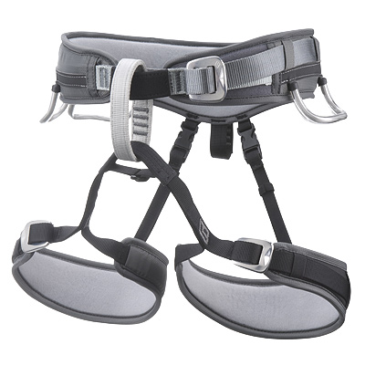

Roping Up
Strapping into your harness is a step by step process, including roping up. When you first get
your harness, put your two legs into the two leg
straps. After you will see three buckles on each side of the leg straps, and in front of your hip. Pull them tight till they fit perfectly and
comfortably. In the front of your harness you will see a little loop, and that is called the strongpoint and is where you put your rope into
Here is a picture of what kind of harness that i use and recommend.
You put your main rope into your strongpoint, and tie a figure 8 knot and a fisherman's knot.Your belayer will help you do that. He will have a
carabiner which is a device that helps you go up and down. After you have all of your knots strapped in, you and your partner need to do a
safety check, by checking figure 8, and fishermans knot. The way to check your figure 8 knot is by counting 5 loops. To check your fishermans
knot, make sure your knot looks like an x on one side and an equals on the other side.Once you have finished your safety check your ready toclimb!
